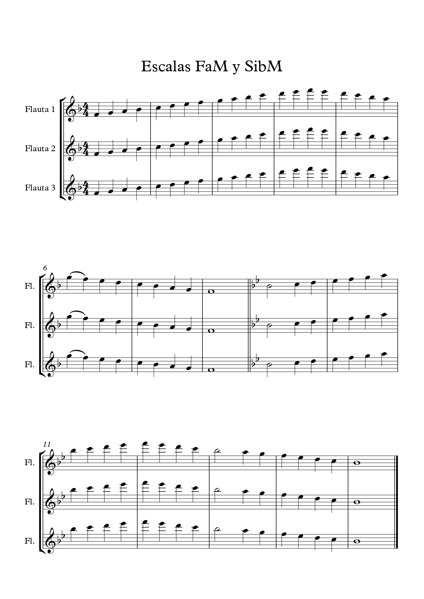
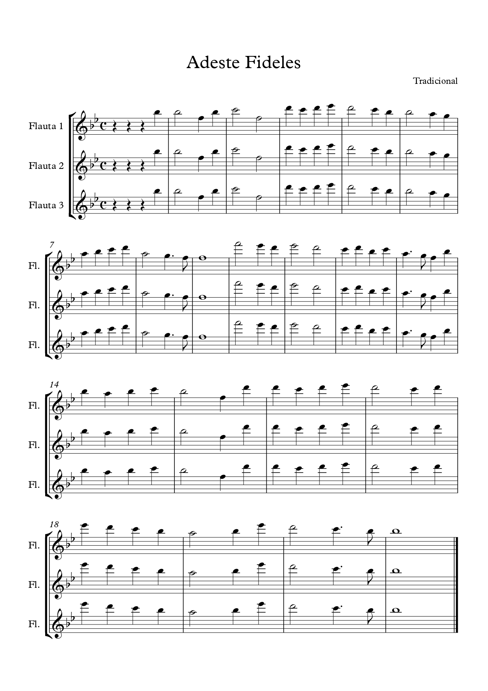
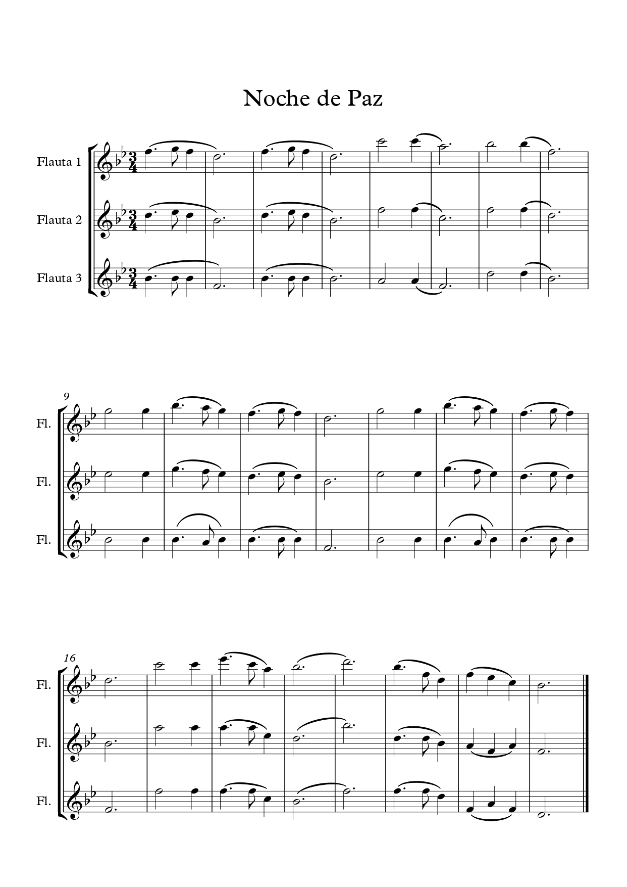
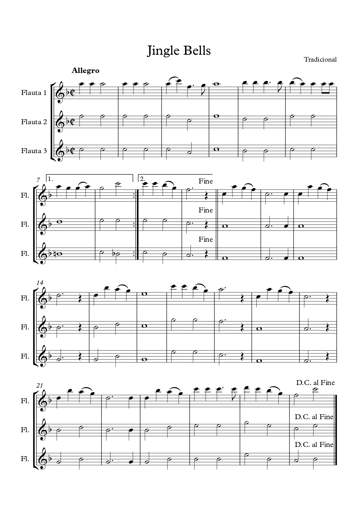
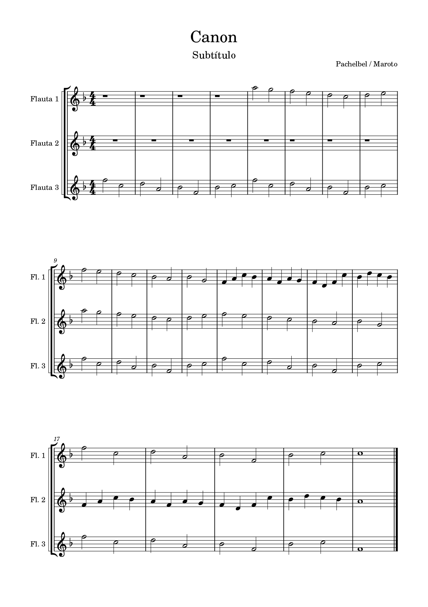

Vamos a trabajar las partituras de forma individual, para afianzar cada una de las partes por separado. Ya tenemos las partituras en papel y podremos realizar las anotaciones que necesitemos. Si es necesario, podemos repasar algunas posiciones de la flauta (mib agudo, fa agudo) en la tabla de digitaciones del libro.
También se podrá contar (en casos puntuales) con la ayuda online de los audios de cada una de las piezas y escucharlos mientras leemos la partitura. Los audios serán proporcionados en aquellos casos necesarios, no contanto con su disponibilidad desde el comienzo para evitar el aprendizaje por imitación.
PARTITURAS





ONLINE
A las partituras con soporte informático también podemos cambiar la velocidad con aplicaciones como VLC, MusicSpeed o directamente en MuseScore, por si la queremos trabajar escuchándola, y modificando su velocidad.
En cada aprtado veremos qué Función Ejecutiva trabajamos.
En esta actividad trabajaremos varias funciones ejecutivas.
Cuando leamos la partitura, trabajaremos la Atención selectiva, puesto que la lectura musical conlleva un movimiento secuencial y línea que debemos seguir, empezando en una nota y pasando a la siguiente.
También trabajaremos la Inhibición, ya que tendremos que ignorar estímulos irrelevantes que nos impidan continuar el estudio.
Trabajaremos la Memoria de trabajo porque tendremos que usar nuestros conocimientos musicales para poder decodificar los sonidos que representan las notas y figuras musicales y la Memoria procedimental, debido a la habilidad que hemos adquirido con el tiempo para aprender a tocar la flauta.
Por último trabajaremos la Atención dividida porque cada nota musical nos da información al menos de dos aspectos: la altura de la nota, la duración y en algunos casos la intensidad. Esto quiere decir, las correspondientes digitaciones en la flauta, la nota, la figura y la duración esa nota... todo esto en décimas de segundo.
En este caso se supone que ya hemos hecho el trabajo de estudio de la partitura y vamos a ensayar con sobre la propia melodía.
Aquí sobre todo trabajaremos la Inhibición, puesto que la melodía no va a detenerse, y tenemos que evitar cualquier distracción para no perder la pulsación de la reproducción online.
Trabajaremos la Atención sostenida, porque debemos escuchar la melodía de la reproducción para ir al mismo tempo.
También puntualmente utilizaremos la Flexibilidad cognitiva, porque si en un momento dado nos paramos, para no empezar de nuevo, tenemos que intentar retomar la canción en el punto en el que esté la reproducción online.
Otra función ejecutiva que trabajaremos será la Planificación, porque vamos a determinar la velocidad de la reproducción online, en función de la soltura con la que nos sabemos ya la partitura.
Vamos a trabajar la Metacognición porque al tocar sobre la melodía, podremos valorar si la hemos estudiado bien o no, encontrar los fallos, localizar las dificultades y repasarla si es necesario.
Igualmente usaremos la Atención dividida porque debemos de estar pendiente de nuestra interpretación y la del reproductor.
Por último trabajaremos la Memoria de trabajo, puesto que vamos a reproducir, sobre un audio, la partitura que previamente hemos aprendido, y la Memoria procedimental, debido a la habilidad que hemos adquirido con el tiempo para aprender a tocar la flauta, aplicando las digitaciones aprendidas últimamente.
A los alumnos que les falta destreza en la lectura musical, optan por aprenderse las melodías por imitación. Esto es algo que hay que evitar al completo, de ahí que la ayuda de archivos informáticos sea únicamente para aquellos casos necesarios. En este caso trabajamos la Inhibición, para que ningún estímulo nos distraiga del foco que supone seguir el vídeo.
Trabajaremos la Atención sostenida, para estar pendiente en todo momento de las digitaciones de flauta.
También vamos a trabajar la Metacognición porque al tocar sobre el archivo informático, podremos valorar si nos la sabemos o no, y así repetirla hasta lograr el nivel deseado.
Por último trabajaremos la Memoria procedimental, ya que vamos a aprender a tocar la flauta de la forma más básica, por imitación, ya vamos a desarrollar nuestra habilidad para tocar este instrumento.